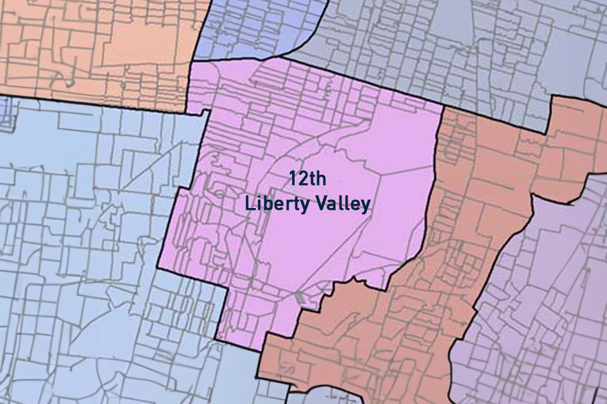
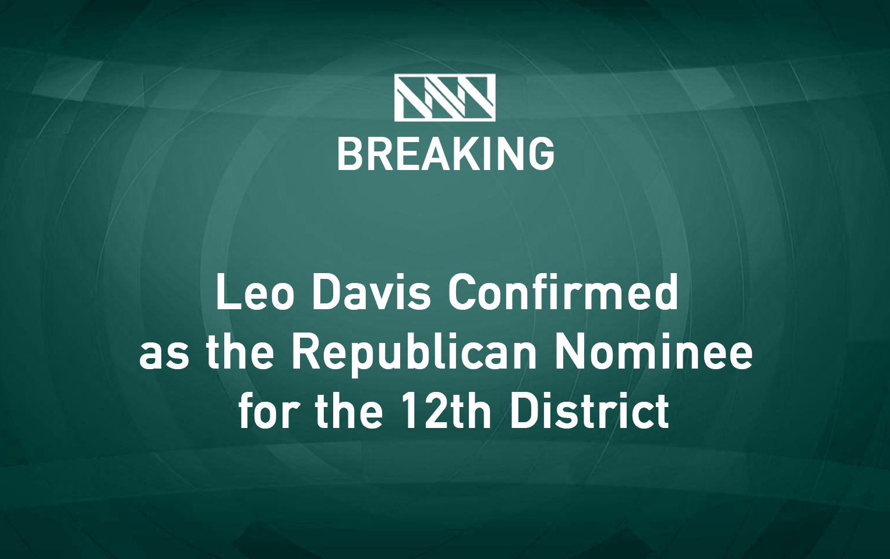

In Liberty Valley, the race for the House of Representatives is heating up in the 12th District, which is set to be a battleground in the upcoming election!
[Breaking] The Republican Party has confirmed Leo Davis as their nominee for the 12th district. Davis, a local entrepreneur known for his conservative values, has vowed to bring change to Washington. His nomination comes after a closely watched primary race that captivated the district's attention.
Daniel Johnson, the Democratic nominee for the 12th District, will hold his first rally since securing the nomination. Johnson, a local businessman, has pledged to be a voice for progress in Congress, championing policies that reflect liberal values.

Introducing our new Winter Collection.
Just drove by and learned about the fire at Joe’s chicken shack. Good thing it was closed so no one was hurt. Liberty Valley’s not gonna let this place stay gone though
Do you know Daniel Johnson? He’s running to be your representative in Congress. Daniel wasn't born in this district and is barely here. His entire career proves that laziness and indifference guarantee a disastrous political performance. This November, don't vote for a candidate who isn't ready to represent you. We can’t afford someone in Congress who has no clue about what our people need. Do not vote for Daniel Johnson.
Great pic of yesterday’s eclipse, makes you appreciate the cosmic dance

was hoping for more dramatic coverage tbh
Leo Davis is running one of the most crooked and corrupt campaigns in the history of our district, which is being supported by special interests. Leo stands for an extremist and polarizing agenda that puts party first and focuses only on his ideology. Vote for Leo Davis if you are looking for a loser who will destroy American values and work against the American Dream.
Just a reminder: All FedEx Ship Centers will now operate from 9 AM to 5 PM on weekdays.